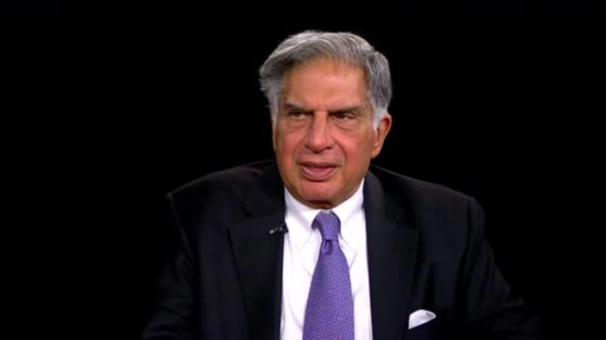

Sir Ratan Tata

Ratan Naval Tata the Indian industrialist
☛ Tribute to Ratan Tata Sir
Ratan Tata Sir is an Indian businessman, investor, philanthropist, and the former chairman of Tata Sons, the holding company of the Tata Group.
He is widely regarded as one of India's most respected business leaders and has been instrumental in transforming the Tata Group into a global conglomerate.
☛ Early Life and Education
Ratan Tata was born on December 28, 1937, in Mumbai, India. He is the son of Naval Tata, a noted businessman, and philanthropist.
He attended the Campion School in Mumbai and later went on to study architecture at Cornell University in the United States.
☛ Career
After completing his education, Ratan Tata joined the Tata Group in 1962. He initially worked in various departments, including the Tata Steel division,
before being appointed as the chairman of Tata Sons in 1991. Under his leadership, the Tata Group expanded its operations to several new industries, including software, automobiles, and telecommunications.
☛ Some of the notable acquisitions made by the Tata Group during Ratan Tata's tenure include Jaguar Land Rover, Corus Group, and Tetley.
He is also credited with launching several new initiatives, including the Nano car, which was marketed as the world's cheapest car.
☛ Apart from his work at the Tata Group, Ratan Tata is also a well-known philanthropist. He has established several charitable trusts and foundations,
including the Tata Trusts, which are among the largest philanthropic organizations in India.
☛ Awards and Honors
Ratan Tata has received several awards and honors for his contributions to the business and social sectors. In 2000, he was awarded the Padma Bhushan,
one of India's highest civilian honors. He was also awarded the Padma Vibhushan in 2008 and the Knight Grand Cross of the Order of the British Empire in 2014.
☛ Legacy
Ratan Tata is widely regarded as one of India's most respected and influential business leaders.
His vision and leadership have transformed the Tata Group into a global conglomerate with a presence in several key industries. His contributions to the social sector have also been significant, and he continues to be a role model for aspiring entrepreneurs and philanthropists.
☛ Conclusion
Ratan Tata Sir's contributions to the business and social sectors have been immense, and he continues to inspire generations of entrepreneurs and philanthropists.
His leadership and vision have transformed the Tata Group into a global conglomerate, and his charitable work has made a significant impact on the lives of millions of people in India. He is truly a legend and a role model for all of us.